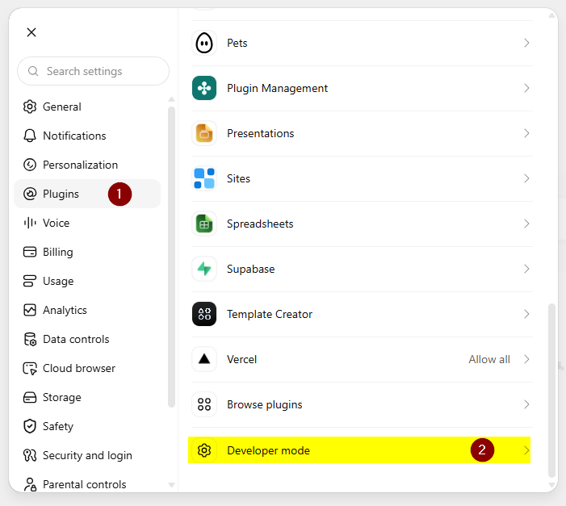
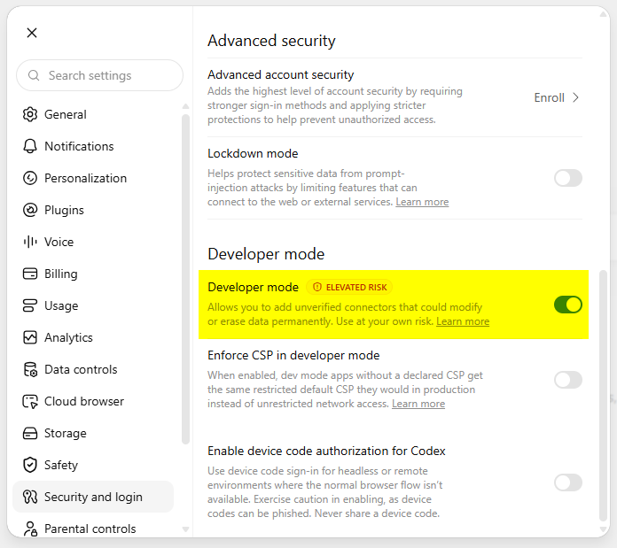
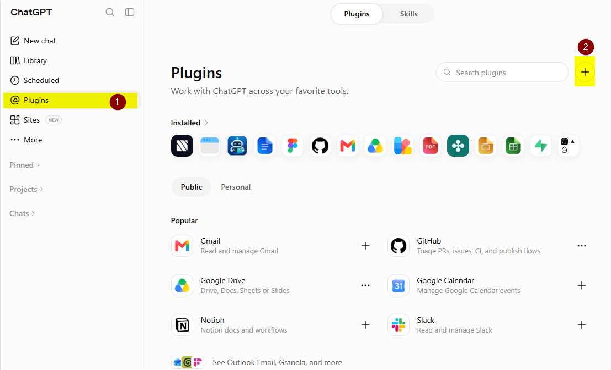
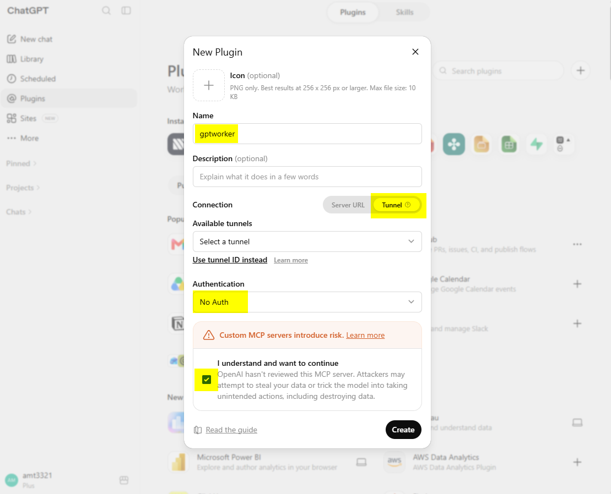

Kết nối GPTWorker với ChatGPT
Secure MCP Tunnel đã sẵn sàng. ChatGPT Settings và trang hướng dẫn này đã được mở tự động.
Làm lần lượt theo 4 hình bên dưới. Đây chỉ là bước kết nối lần đầu.
1
Bật Developer mode
Trong ChatGPT Settings, mở phần Plugins và bật Developer mode như hình.
Mở Settings → Plugins
2
Mở Plugins và tạo plugin mới
Mở trang Plugins, sau đó nhấn nút + để tạo plugin mới như hình.
Mở Plugins
3
Tạo plugin GPTWorker
Điền thông tin theo hình và kết nối plugin với Secure MCP Tunnel vừa tạo.
- Name:
gptworker - Connection:
Tunnel - Chọn đúng Tunnel của GPTWorker hoặc paste Tunnel ID
tunnel_... - Chạy Scan Tools / Test connection, sau đó Create/Save
Không nhập
http://127.0.0.1:3000/mcp vào ChatGPT. MCP local được nối qua Secure MCP Tunnel.
4
Gọi GPTWorker lần đầu
Mở một chat mới. Gõ @gptworker và chọn GPTWorker khi ChatGPT hiện plugin.
Sau khi plugin đã được gọi, thử:
gptworker/Nếu kết nối đúng, ChatGPT sẽ hiển thị menu lệnh của GPTWorker.

Hoàn tất
Kết nối ChatGPT chỉ cần thiết lập một lần. Trong bản source hiện tại, dùng run.bat để bật lại GPTWorker khi cần test; bản desktop sau này sẽ tự chạy nền theo Windows.